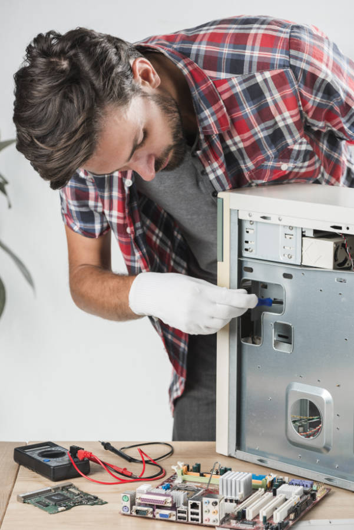
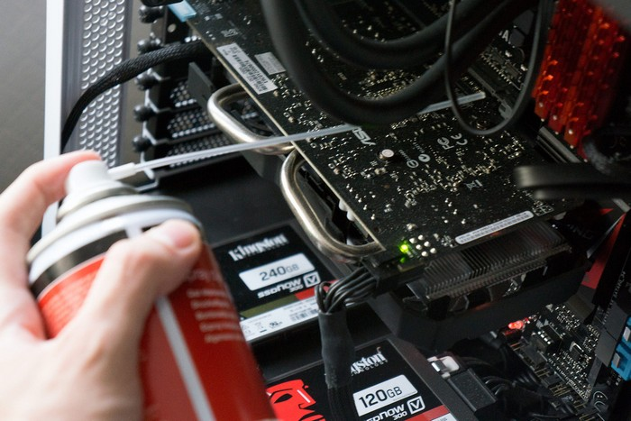
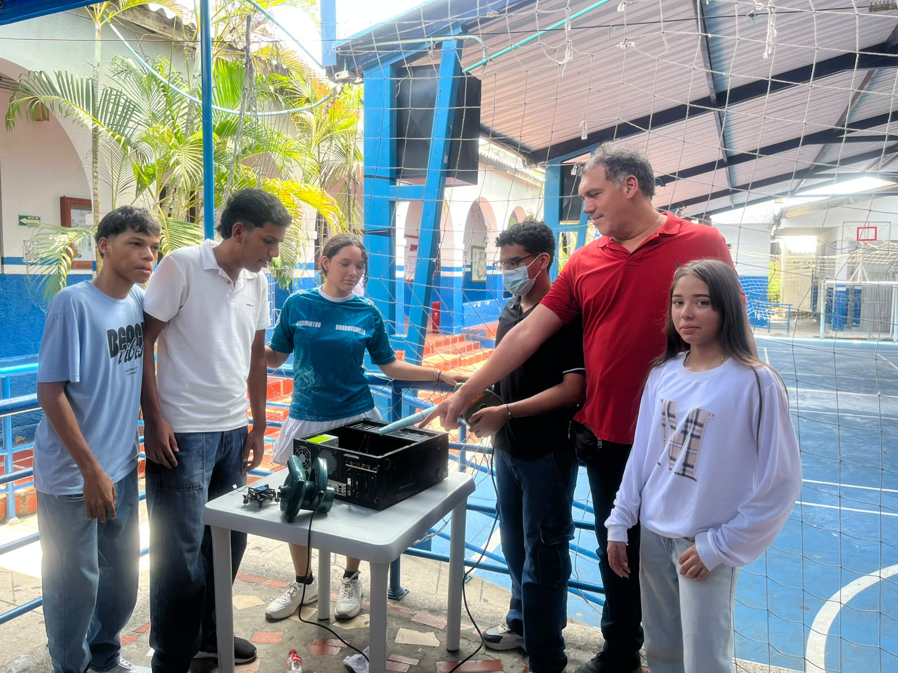

Alarga la vida útil de tu computador, optimiza su rendimiento y evita fallas de manera profesional.
Detrás de todo buen soporte técnico hay un equipo comprometido con el aprendizaje y el desarrollo tecnológico.
Aquí nos encontramos en pleno proceso de diagnóstico y mantenimiento de hardware, aplicando de forma práctica las mejores directrices para conservar el rendimiento óptimo de los equipos de cómputo.
Promover la educación digital, la innovación tecnológica y el cuidado responsable de nuestras herramientas de trabajo del día a día.
¡Aprende visualmente cómo llevar a cabo una rutina de mantenimiento eficiente! En este video de YouTube te mostramos los pasos fundamentales que no debes pasar por alto.
Observar los procedimientos te ayudará a perder el miedo y a evitar errores costosos, como dañar conectores delicados o aplicar productos incorrectos.
Para realizar un mantenimiento preventivo exitoso y seguro, se requieren las siguientes herramientas e implementos básicos:

💡 Para tener más información y profundizar en el tema, puedes consultar el portal de Educ.ar – Educación y tecnología o revisar el video de referencia sobre Mantenimiento preventivo de computadores en YouTube.
La limpieza física de los componentes internos y externos previene el sobrecalentamiento y alarga la vida útil del equipo.

💡 Para profundizar en las mejores prácticas y recomendaciones técnicas, puedes consultar la Guía de mantenimiento preventivo de PC de HP o ver videos prácticos en YouTube sobre limpieza de hardware paso a paso.
Mejorar el rendimiento del sistema operativo y las aplicaciones elimina archivos basura y acelera los tiempos de respuesta del equipo.
💡 Para profundizar en el tema y conocer más definiciones técnicas, puedes consultar el artículo de Optimización de software – Wikipedia o revisar videos explicativos en YouTube sobre optimización de software en computadores.
El mantenimiento preventivo también implica proteger tu información contra virus, malware o fallas repentinas del disco duro que puedan causar pérdidas de datos irreparables.
En esta sección mostramos los procedimientos prácticos realizados por el equipo durante el mantenimiento preventivo y limpieza profunda de los equipos.
Uso de la sopladora de aire para retirar todo el polvo y suciedad acumulada en los ventiladores, fuente de poder y componentes internos.

Limpieza detallada con brochas antiestáticas y aplicación de alcohol isopropílico / limpiador de contactos en las memorias RAM y placa madre.
Revisión del correcto ajuste de los cables, cambio de pasta térmica y pruebas de encendido del equipo.